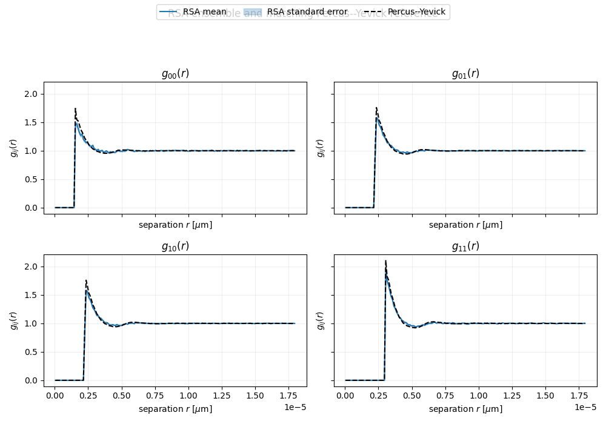

Note
Go to the end to download the full example code.
RSA ensemble versus a Percus–Yevick reference#
This validation example compares partial pair correlations \(g_{ij}(r)\) from an ensemble of explicit random sequential adsorption (RSA) configurations with a Percus–Yevick hard-sphere-mixture reference at the same radius distribution and volume fraction.
The shaded region is one standard error of the RSA ensemble mean. It shows the finite-ensemble uncertainty; it is not an error band for Percus–Yevick. RSA is irreversible and history-dependent, whereas Percus–Yevick is an analytical equilibrium reference. The curves therefore need not coincide.
import matplotlib.pyplot as plt
from PackLab import analytical, monte_carlo, samplers, ureg
Match the physical mixture in both workflows#
radii = [0.75, 1.5] * ureg.micrometer
number_fractions = [0.5, 0.5]
volume_fraction = 0.25
domain = monte_carlo.PackingDomain(
36.0 * ureg.micrometer,
36.0 * ureg.micrometer,
36.0 * ureg.micrometer,
use_periodic_boundaries=True,
)
sampler = samplers.DiscreteRadiusSampler(radii=radii, weights=number_fractions)
options = monte_carlo.RSAOptions()
options.random_seed = 2026
options.maximum_attempts = 2_050_000
options.maximum_consecutive_rejections = 500_000
options.target_packing_fraction = volume_fraction
options.enforce_radii_distribution = True
estimator = monte_carlo.PackingEstimator(domain, sampler, options, number_of_bins=180)
estimate = estimator.estimate(number_of_samples=60, progress=True)
particle_radii, fractions = sampler.to_bins()
py_domain = analytical.PercusYevickDomain(
size=100_000 * ureg.micrometer,
radii=particle_radii,
volume_fraction=volume_fraction,
number_fractions=fractions,
)
py_result = analytical.PercusYevickSolver(
densities=py_domain.particle_densities_per_radius,
radii=py_domain.radii,
wavenumber="auto",
).compute(estimate.centers)
PackingEstimator progress
sample accepted attempted acceptance rate packing fraction
1/60 1468 19320 7.598% 0.250209
2/60 1461 17777 8.218% 0.250209
3/60 1480 17774 8.327% 0.250134
4/60 1490 19136 7.786% 0.250247
5/60 1438 17557 8.190% 0.250134
6/60 1512 20056 7.539% 0.250285
7/60 1453 18562 7.828% 0.250171
8/60 1428 19130 7.465% 0.250020
9/60 1421 19605 7.248% 0.250020
10/60 1455 18589 7.827% 0.250247
11/60 1512 20301 7.448% 0.250020
12/60 1454 17415 8.349% 0.250209
13/60 1495 20658 7.237% 0.250171
14/60 1465 16432 8.916% 0.250096
15/60 1540 22655 6.798% 0.250285
16/60 1494 17142 8.715% 0.250134
17/60 1443 19153 7.534% 0.250058
18/60 1471 18824 7.814% 0.250058
19/60 1472 17955 8.198% 0.250096
20/60 1457 18512 7.871% 0.250058
21/60 1518 22274 6.815% 0.250247
22/60 1414 15525 9.108% 0.250020
23/60 1443 17441 8.274% 0.250058
24/60 1449 17842 8.121% 0.250020
25/60 1452 17639 8.232% 0.250134
26/60 1413 17012 8.306% 0.250247
27/60 1435 18960 7.569% 0.250020
28/60 1443 18200 7.929% 0.250058
29/60 1449 17439 8.309% 0.250020
30/60 1505 18516 8.128% 0.250020
31/60 1455 18715 7.775% 0.250247
32/60 1404 15421 9.104% 0.250171
33/60 1443 16267 8.871% 0.250058
34/60 1467 17329 8.466% 0.250171
35/60 1462 18761 7.793% 0.250247
36/60 1465 17652 8.299% 0.250096
37/60 1393 17613 7.909% 0.250020
38/60 1498 22195 6.749% 0.250285
39/60 1494 18233 8.194% 0.250134
40/60 1474 15610 9.443% 0.250171
41/60 1469 17374 8.455% 0.250247
42/60 1462 17887 8.174% 0.250247
43/60 1442 16441 8.771% 0.250020
44/60 1449 20020 7.238% 0.250285
45/60 1493 19685 7.584% 0.250096
46/60 1462 19361 7.551% 0.250247
47/60 1451 20834 6.965% 0.250096
48/60 1435 17530 8.186% 0.250285
49/60 1415 18648 7.588% 0.250058
50/60 1497 21300 7.028% 0.250247
51/60 1519 20815 7.298% 0.250020
52/60 1475 16158 9.129% 0.250209
53/60 1540 24059 6.401% 0.250020
54/60 1470 19234 7.643% 0.250020
55/60 1428 17602 8.113% 0.250020
56/60 1475 20995 7.025% 0.250209
57/60 1418 19186 7.391% 0.250171
58/60 1468 17048 8.611% 0.250209
59/60 1519 19248 7.892% 0.250020
60/60 1506 17892 8.417% 0.250058
Compare every partial correlation#
The analytical curve is evaluated at the RSA bin centres. A visible difference is therefore due to the models or finite RSA sampling, rather than plotting two different radial grids.
figure, axes = plt.subplots(2, 2, figsize=(10, 7), sharex=True, sharey=True)
standard_error = estimate.std_g / estimator.statistics.completed_samples**0.5
for i, j in ((0, 0), (0, 1), (1, 0), (1, 1)):
axis = axes[i, j]
_ = axis.plot(estimate.centers, estimate.mean_g[i, j], color="C0", label="RSA mean")
_ = axis.fill_between(
estimate.centers,
estimate.mean_g[i, j] - standard_error[i, j],
estimate.mean_g[i, j] + standard_error[i, j],
color="C0",
alpha=0.25,
label="RSA standard error",
)
_ = axis.plot(estimate.centers, py_result.g[i, j], "k--", label="Percus--Yevick")
axis.set_title(rf"$g_{{{i}{j}}}(r)$")
axis.set_xlabel("separation $r$ [$\\mu$m]")
axis.set_ylabel(r"$g_{ij}(r)$")
axis.grid(alpha=0.2)
handles, labels = axes[0, 0].get_legend_handles_labels()
_ = figure.legend(handles, labels, loc="upper center", ncol=3)
figure.suptitle("RSA ensemble and matching Percus--Yevick reference", y=0.98)
figure.tight_layout(rect=(0, 0, 1, 0.91))
plt.show()

Total running time of the script: (0 minutes 4.194 seconds)